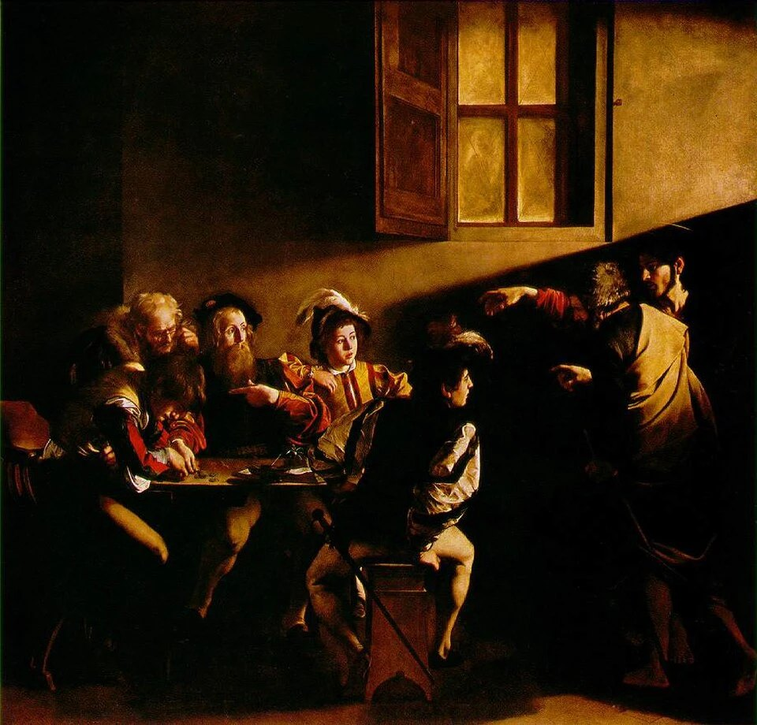
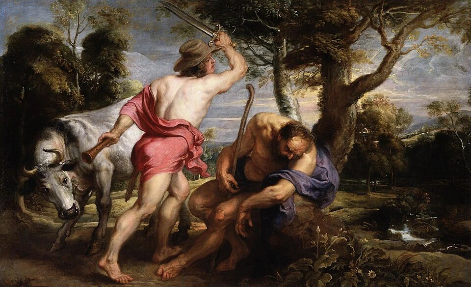
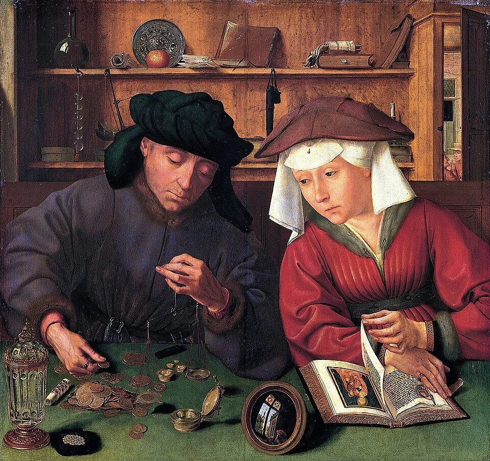
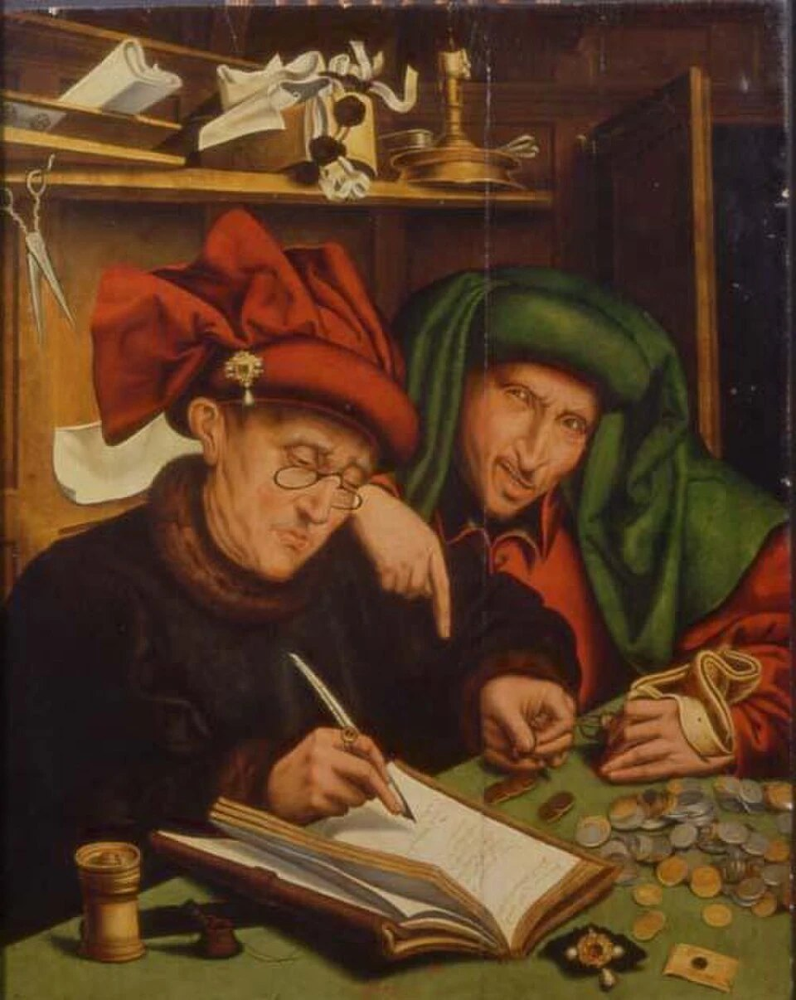

Expert-comptable, Paris 7e
Acquérir une entreprise, obtenir son financement.
Davy Lebelle, expert-comptable, a passé plus de dix ans en banque. Il structure votre acquisition et défend votre dossier auprès des banques.

Emplacement imageLa Vocation de saint MatthieuŒuvre du domaine public à insérer
0+
années d'expérience
0+
années en banque
[à compléter]
acquisitions accompagnées
[à compléter]
financements obtenus
01.
Acquisition d'entreprise
Racheter une entreprise sans naviguer à vue
Lebelle Expertise & Audit accompagne les dirigeants et repreneurs dans l'acquisition d'entreprise, à Paris et en Île-de-France. Nous évaluons la cible, structurons l'opération et sécurisons son financement.
1
Évaluer la cible
Analyse des comptes, des risques et du prix de référence.
2
Structurer l'opération
Montage juridique et financier, calendrier, points de négociation.
3
Financer
Dossier bancaire, recherche de financements, négociation des conditions.
4
Signer et reprendre
Sécurisation des actes, premiers mois de la reprise.
« Hermès, dieu des échanges, guidait marchands et voyageurs. »Mythologie grecque

Emplacement imageMercure et ArgusŒuvre du domaine public à insérer

Emplacement imageLe Prêteur et sa femmeŒuvre du domaine public à insérer
02.
Financement bancaire
Un dossier bancaire lu par un ancien banquier
Davy Lebelle a passé plus de dix ans en banque, sur les marchés financiers et en banque privée. Il sait ce qu'un comité de crédit attend et bâtit votre dossier pour y répondre.
1
Cadrer le besoin
Montant, durée, objet du financement et calendrier.
2
Bâtir le prévisionnel
Hypothèses défendables, trésorerie et capacité de remboursement.
3
Constituer le dossier
Pièces, présentation du projet, réponses aux objections.
4
Négocier avec les banques
Mise en concurrence, taux, garanties et covenants.
« Ploutos, dieu de la richesse, naquit d'un champ trois fois labouré. »Hésiode, Théogonie
03.
Trois missions qui tiennent vos comptes
Le socle du cabinet, produit sur Pennylane pour libérer du temps de conseil.
-
Expertise comptable digitalisée
Comptabilité, fiscalité, social et paie, produits sur Pennylane. Vous suivez vos chiffres en temps réel, sur ordinateur et sur mobile.
-
Conseil aux dirigeants et aux banques
Structuration financière, prévisionnels et vision patrimoniale du dirigeant. Le cabinet conseille aussi des établissements financiers.
-
Contrôle LCB-FT pour l'Ordre
Le Conseil supérieur de l'Ordre des experts-comptables nous confie des missions de contrôle. Nous vérifions le respect des diligences anti-blanchiment de la profession.
« Maât pesait les cœurs sur sa balance, à la plume près. »Mythologie égyptienne

Emplacement imageLes ChangeursŒuvre du domaine public à insérer
04.
Un expert-comptable formé en banque
- Expert-comptable inscrit à l'Ordre de Paris Île-de-France
- Plus de 20 ans en cabinet d'expertise comptable, d'audit et en banque
- Plus de 10 ans en banque, marchés financiers et banque privée
- Double cursus : expertise comptable et finance d'entreprise
Le cabinet a été créé fin 2022, avenue Bosquet, à Paris 7e. Il accompagne des dirigeants de TPE et PME et des repreneurs d'Île-de-France.
« Thot, scribe des dieux, tenait le compte des jours et des âmes. »Mythologie égyptienne
05.
Les questions que vous vous posez
Des réponses courtes, à relire avant un rendez-vous bancaire ou une première approche de cible.
Comment préparer un dossier de financement bancaire solide ?
Un dossier solide présente un besoin chiffré, un prévisionnel réaliste et une capacité de remboursement démontrée. Nous le construisons avec vous et le présentons aux banques.
Qui peut m'accompagner dans le rachat d'une entreprise à Paris ?
Lebelle Expertise & Audit, cabinet d'expertise comptable à Paris 7e, accompagne les repreneurs de l'évaluation de la cible jusqu'à la signature. Le financement de l'opération fait partie de la mission.
Pourquoi choisir un expert-comptable avec une expérience bancaire ?
Davy Lebelle a passé plus de dix ans en banque, sur les marchés financiers et en banque privée. Il sait comment un comité de crédit lit un dossier et le prépare en conséquence.
Que vérifie une banque avant d'accorder un prêt professionnel ?
La banque examine la capacité de remboursement, l'apport, la cohérence du prévisionnel et les garanties proposées. Un dossier complet et argumenté accélère la décision.
Comment fonctionne la comptabilité sur Pennylane ?
Vos comptes bancaires, vos factures et vos outils métier se synchronisent automatiquement dans Pennylane. Vous suivez votre trésorerie en temps réel, sur ordinateur et sur mobile.
06.
Parlons de votre projet
Premier échange sans engagement, au cabinet ou en visioconférence.
- 58-60 avenue Bosquet, 75007 Paris
- +33 6 66 64 17 68
- davy.lebelle@lebelle-expertise.com
- LinkedIn du cabinet